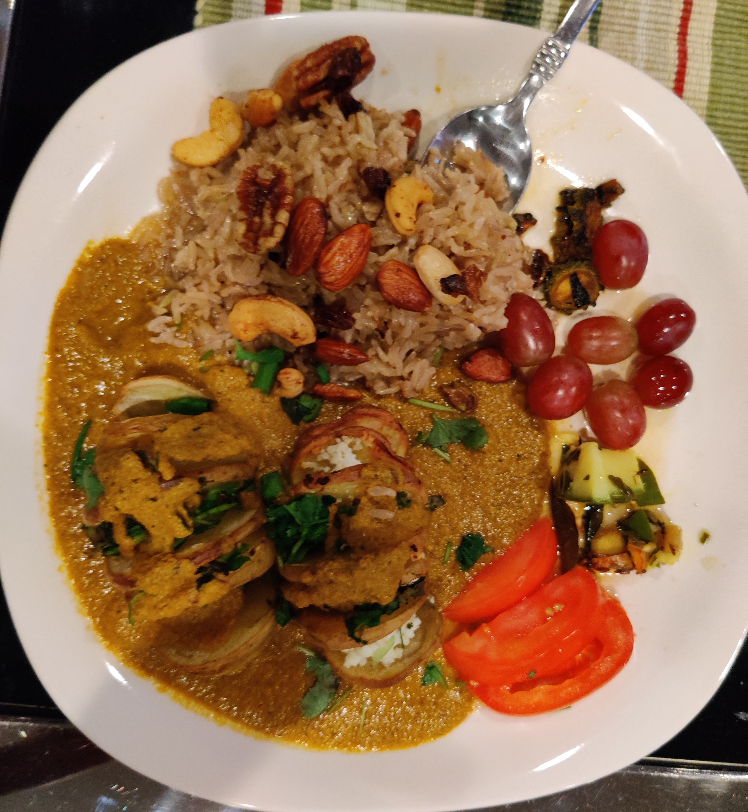

A filling meal that will serve up to 6 people. The potatoes are soaked in gravy and served with garnished rice on the side.
My mom and her friends used to eat this all the time when she was in college because it was cheap. We made this meal together (thank you!).
Print Recipe
Ingredients
- Olive Oil
- Salt
- Star Anise
- Big Cardamom
- Bay Leaf
- 12 Sliced Potatoes
- Cheese or Paneer
- Chopped Cilantro
- Chopped Chives
- 1 Sliced Onion
- Bitter Gourd
- Peanuts
- 1 Sliced Onion
- Garlic Paste
- 4 Tomatoes sliced into halves
- Butter
- Cashews
- Raisins
- Spices
- 1.5 Cups of Rice
- 1 Sliced Onion
- 2 Green Chilis
Misc
Spices
Potatoes
Onions and Bitter Gourd Mixture
Gravy
Rice Garnish
Rice

Baked Potatoes
Brush the potatoes with oil and put in the oven for an hour at 350 degrees. Add cheese or paneer, cilantro, and chives on top when it is done. Broil for 2 minutes at 550 degrees.